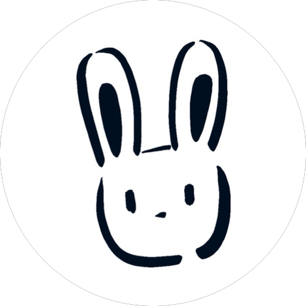

ABOUT

LI ZHONGYU
High School Student
Nanjing, China
Like an autobiography? Not quite.
像是自传吗？但又不完全是
ENGLISH
My name is Li Zhongyu. I was born in Nanjing, China, and, just like everyone else, I'm simply an ordinary person. I'm currently a high school student, and biology is one of my favorite subjects. 🧬
My childhood
I was born in 2010, so perhaps the word “childhood” is not quite the perfect choice here. But let me use it for now.
I wasn't a very good student when I was younger. In fact, there was even a time when getting into high school seemed uncertain. Education in China can be a high-pressure experience, both for parents and for students. When I was little, my parents didn't place many demands on my grades. The simplest reason was that I didn't really want to study.
Instead, my parents took me traveling during almost every winter and summer holiday. Before I finished primary school, I had already visited more than ten cities across China, and I had also spent nearly a month traveling in the United States. At the time, I didn't think much of these experiences. Looking back, however, they had a much greater influence on me than I realized.
Then, near the end of primary school, when I was ten, I became fascinated by computers. My parents supported me wholeheartedly. 💻
A few things about how I learned computing
Unlike what many people might expect, I didn't start with software. My first steps were actually in hardware.
I discovered open-source hardware, especially Arduino — a development board that could be programmed through a graphical environment and connected to all kinds of sensors to create interesting little projects. I was driven entirely by curiosity and learned without a teacher. Looking back, I think that may be one of the reasons I have continued to enjoy computing for so long.
During middle school, I joined a school club where my hardware programming received more systematic training. In 2022, I won the first national gold medal of my life in a national middle-school competition focused on open-source hardware design and applications. After that, I took part in a number of provincial and city-level competitions and had the chance to achieve a few more results along the way.
High school begins
In China, high school can be a demanding journey. Toward the end of middle school, I finally began taking my studies seriously and was admitted to a key high school in my hometown. Even my parents were a little surprised — they had never expected that I would make it there.
Although I'm a boy, making friends has never been something I'm particularly good at. Most of the time, I enjoy being on my own, although sometimes I still want to connect with other people.
That was one of the reasons I joined Postcrossing, a project that connects people around the world by exchanging postcards through the traditional postal system. By sending postcards to people in different countries and receiving theirs in return, I gradually began to see a much wider world. Unfortunately, I lost access to my previous account, so I can't show you all the exchanges I had there.
After starting high school, I stopped writing code for quite a long time. But eventually, a rather bold idea began to come back to me.
A bold idea
One day, while writing a postcard to another Postcrossing member, I read the self-introduction of an experienced member. Honestly, her introduction wasn't very different from anyone else's — it was mostly about her interests and everyday life. But at the end, she had added a Google Sheet, and it immediately caught my attention.
Through a public Google Sheet, she clearly showed the countries she had exchanged postcards with and the types of postcards she had received and sent. It gave me an idea: why not build my own personal website?
Then people from different parts of the world could simply click a link and get to know me. And that was how this website was born. 🌍
I want it to be a little different
Once the idea appeared, I thought about it for a long time. A website that only displays information about me would be, well, a little boring. So I decided to build some small projects that could actually mean something.
That was how Global View came to life.
My original idea was to let people upload their own photos. But I eventually realized that GitHub Pages only provides static website hosting, so that idea had to be abandoned. Instead, supporters can send me photos by email, and I can upload them to the website myself. This also gives me a chance to review what gets published.
The website has only just launched — perhaps it will still be less than a month old when you discover it. That is exactly why it needs your support. I built this website simply because I genuinely love the idea behind it. If you are willing to send me a photo from your country by email or through another way, even just one photo, that would mean a lot to me. It would be one of the greatest ways to support both me and this little website. 📷
One last thing
My father once told me, “I hope you can always keep doing what you love.” I have tried to live by those words ever since.
I hope I can continue maintaining this website for a long time. It may remain very small. Its reach may never go beyond the Postcrossing community. That's okay. What matters to me is that it becomes a website with some meaning and value.
I mentioned earlier that I really like biology. In the future, I hope to study at the intersection of biology and computer science — perhaps something like bioinformatics.
Thank you, sincerely, for visiting my website.
Li Zhongyu
中文
我的名字叫做 Li Zhongyu，出生在中国南京。和大家一样，我就是一个普通人。我现在正在读高中，学习的选科是生物，而我也确实很喜欢这门科目。🧬
我的童年
虽然我出生在 2010 年，“童年”这个词放在这里似乎有些不太合适，但也允许我暂且这么称呼它吧。
我小时候成绩很差，甚至一度都有可能考不上高中。在中国，教育是一件压力很大的事情，对家长如此，对学生也是如此。小时候，我的父母基本没有对我的学习提出太多要求。说到底，最根本的原因还是因为那时候的我压根不想学习。
不过，每年的寒暑假，我的父母都会带我出去旅行。在小学毕业之前，我已经去过中国十多个城市，也曾经在美国旅行了将近一个月。这些经历在当时的我看来似乎没什么特别，但现在回头看，它们对我之后的发展产生了非常大的影响。
终于，在小学快要结束的时候，也就是我十岁那年，我开始迷上了计算机。我的父母也非常支持我。💻
一些我学习计算机的小事
和很多人想象的不一样，我最开始学习的并不是软件，而是硬件。
我最初接触到了开源硬件，也就是 Arduino——一块可以通过图形化编程环境进行开发、连接各种传感器，并制作出许多有意思的小项目的开发板。当时的我完全是因为兴趣才开始学习，也没有找任何老师。现在回头看，我想这可能也是让我一直喜欢计算机直到现在的原因之一。
初中的时候，我参加了学校的社团，在那里我的硬件编程得到了相对系统的训练。也是在 2022 年，我拿到了人生中的第一个全国金牌——一个全国中学生开源硬件设计与应用相关赛事的金牌。此后，我还参加了许多省级和市级赛事，也取得了一些成绩。
高中生活开始
在中国，高中是一个相当艰苦的过程。初中的最后阶段，我终于开始认真学习，并考上了我们当地的一所重点高中。其实就连我的父母也有些难以置信——他们以前从来没有想过我能够考上重点高中。
虽然我是一个男生，但我其实很不擅长交朋友。我大多数时候喜欢一个人独处，但有时也会希望能够与别人交流。
于是，我参加了 Postcrossing，一个通过传统邮局与世界各地的人交换明信片的项目。通过与不同国家的人寄出和收到明信片，我渐渐看到了一个更加广阔的世界。很遗憾的是，我之前的交流账号丢失了，所以没办法把过去的交流成果展示给你。
其实，上高中之后，我有很长一段时间没有再写代码。但是后来，一个大胆的想法开始重新出现在我的脑海里。
一个大胆的想法
有一次，我在给一位 Postcrossing 成员写明信片的时候，读到了她的个人简介。说实话，她的简介其实和其他人并没有太大区别，主要也是介绍自己的兴趣和生活。但在简介的最后，她放上了一个 Google 表格，这一下深深吸引了我的注意。
她通过一个公开的 Google 表格链接，清晰地向别人展示自己曾经交流过的国家，以及收到和寄出的明信片类型。这让我产生了一个大胆的想法：为什么不做一个属于自己的个人网站呢？
这样，来自世界不同国家的人，只需要点击一个网址，就可以认识我。于是，这个网站诞生了。🌍
我希望它能变得与众不同
这个大胆的想法出现之后，我认真想了很久。如果只是一个单纯展示个人信息的网站，确实太无聊了。所以，我决定做一些真正有意义的小项目。
Global View 就这样诞生了。
我最开始的设想，是让大家自行上传照片。但后来我发现，因为我使用的是 GitHub Pages，它只能提供静态网站托管，因此这个想法最终只能告一段落。替代方案是让支持者通过邮件把照片发给我，再由我从后台上传到网站。这样一来，也正好可以起到一定的审核作用。
虽然现在这个网站才刚刚发布——也许你看到它的时候，它甚至还不到一个月大——但也正因为如此，它才更加需要你的支持。我搭建这个网站，完全是因为我真的热爱这件事情。如果你愿意通过邮件或者其他方式给我发送一张来自你所在国家的照片，哪怕只有一张，对我来说都意味着很多。这不仅是对我的认可，也是对这个小小网站最大的支持。📷
关于我最后想说的话
我爸爸曾经对我说过一句话：“希望你能一直坚持你所热爱的事。”这句话，我一直在努力践行。
我希望从今以后能够一直维护好这个网站。它可以非常小，也可以永远只在 Postcrossing 社区里传播，但我希望它能够成为一个有意义、有价值的网站。
我在开头提到过，我很喜欢生物。我希望未来能够学习生物与计算机的交叉学科，比如生物信息学。
由衷地感谢你能访问我的个人网站。
Li Zhongyu